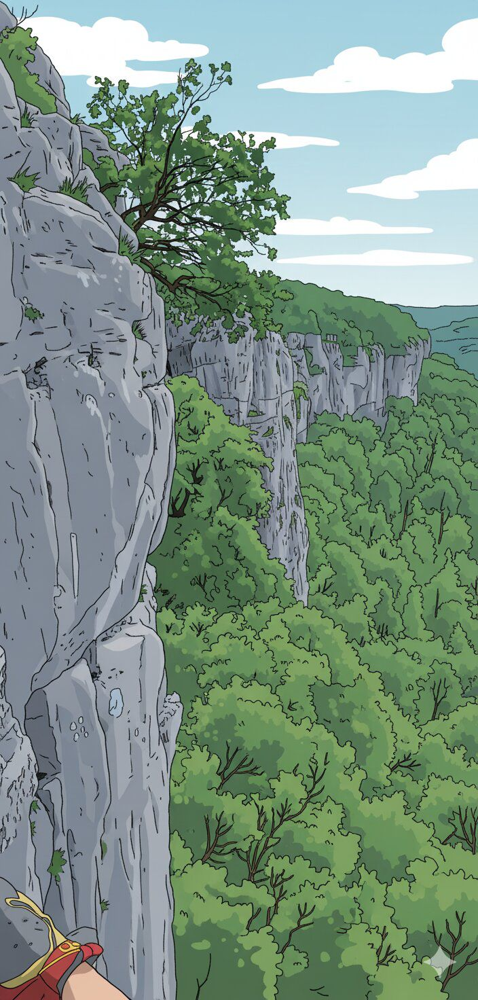

After eight
Touchez une voie pour voir ses infos, appui long pour la retrouver dans la liste.
-
1
Arthur Rambo
6bUne ligne sympa, de beaux placements.
René Hopf
-
2
Hélico presto
6bBloc dans le dévers. Quand Profit reliait les voies en … hélico !
Jean-Yves Salin
-
3
Tu m’Elton, John !
6b+Un passage déversant peu commode au milieu.
Jean-Yves Salin
-
4
Lunule de miel
6a/6a+Historique, de très beaux mouvements ! Sortie aérienne.
René Hopf
-
5
Inconscience tranquille
7bUn crux en dalle peu évident. On sort ensuite par « Lunule… »
René Hopf
-
6
Le vilain petit canard
8a+Mouvements physiques, mousquetonnages délicats. On rejoint ensuite « Inconscience tranquille ».
Jean-Yves Salin
-
7
After eight
8ale premier 8a de la région. Beau et incontournable ! La nouvelle sortie (juin 2017) tout droit rajoute une petite difficulté (gros 8a !)
René Hopf, Jean-Yves Salin
-
8
Déclaration d’humour
8a+Beaux mouv’ physiques. Il serait dommage de court-circuiter le crux du milieu en passant par la gauche (8a tout de même)!
Gilles Deschamps
-
9
Un endroit tout envers
7c+Un chef d’œuvre de résistance. Et ce nom sublime… !
René Hopf
-
10
Top chrono
8bUn départ ultra-bloc. Rejoins ensuite la fin de « Betty blues ».
Gilles Deschamps
-
10b
Baconator
8b+Départ par « Top chrono », sortie par « Déclaration d’humour ». Un joli test de force et de résistance …
Pierre Durocher
-
11
Sans contrefaçon
8b+Départ encore plus bloc que le précédent. Merci Pierre ! La voie croise « Betty blues (voie 12) » et sort dans la dalle à droite (un seul point au relais).
Pierre Durocher
-
12
Betty blues
7b+Un départ technique et une traversée physique à gauche emmènent sur un bon pas de bloc (inversées, fissure) ! Le nom anglais de « 37.2 le matin » (Ah, Djian dans les années 80 !)
René Hopf
-
13
La connexion
8aDepuis « Betty », on poursuit la traversée à gauche et on rejoint « un endroit …», court-circuitant ainsi le point de repos : très intéressant !
Jean-Yves Salin
-
14
Le four scolaire
7a/7a+Le départ délicat de « Betty », suivi d’un dièdre bien technique.
Jean-Yves Salin
-
15
Chausson opium
6bTrès beau pilier aux mouvements physiques.
René Hopf
-
16
sombre et rosse
6cUn départ physique !
Jean-Yves Salin
-
17
Crac boum hue
6a+De belles portions de cailloux.
Jean-Yves Salin
